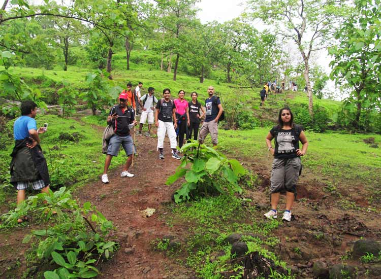
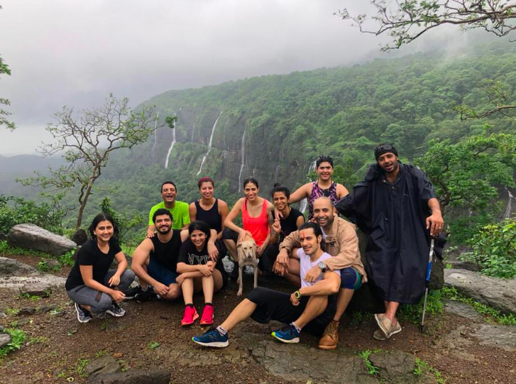

Welcome to Thrilltrekkers Trekking, your ultimate destination for exploring the breathtaking landscapes and adventurous trails of Maharashtra. We are passionate about promoting outdoor activities and providing unforgettable trekking experiences in this magnificent state.
At Thrilltrekkers trekking, we believe that nature has the power to inspire, rejuvenate, and challenge us. With its diverse topography, from towering mountains to dense forests and cascading waterfalls, Maharashtra offers a paradise for trekkers and nature enthusiasts. Our aim is to facilitate your journey into the heart of these captivating landscapes, allowing you to connect with nature in a unique and fulfilling way. Our team of experienced trek leaders and outdoor enthusiasts are committed to creating exceptional trekking adventures that cater to all skill levels, from beginners to seasoned trekkers. We carefully curate our trekking itineraries to showcase the best of Maharashtra's natural wonders, ensuring a perfect blend of excitement, tranquility, and cultural exploration
Safety is our top priority. We adhere to the highest standards of safety protocols to ensure that every trekking experience with us is secure and enjoyable. Our knowledgeable guides are well-trained in first aid and emergency procedures, and they possess an in-depth understanding of the local terrain, weather conditions, and wildlife. Rest assured, you'll be in capable hands throughout your journey. At Thrilltrekkers Trekking, we believe in responsible and sustainable tourism. We strive to minimize our environmental impact by practicing Leave No Trace principles, promoting eco-friendly trekking practices, and supporting local communities. We work closely with local guides, porters, and homestays, providing opportunities for economic growth and cultural exchange.
Whether you're looking for a thrilling adventure on the rugged Sahyadri mountain range, an enchanting trek through the lush green valleys of the Western Ghats, or a soul-stirring experience at the iconic forts of Maharashtra, we have the perfect trekking expedition for you. Our itineraries are carefully designed to showcase the natural beauty, historical significance, and cultural heritage of each destination. Join us on an extraordinary journey of self-discovery, as you challenge your limits, forge new friendships, and immerse yourself in the awe-inspiring beauty of Maharashtra. Let us be your guide and companion as you explore the untamed trails and create memories that will last a lifetime. Come, embark on an unforgettable adventure with Thrilltrekkers Trekking. Let nature be your guide and Maharashtra be your playground.
